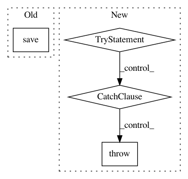

14ad858086a43963bfe1c2c2e1fbd1500d644d19,foreman/data_refinery_foreman/surveyor/external_source.py,ExternalSourceSurveyor,handle_batch,#ExternalSourceSurveyor#Any#Any#,50
Before Change
raise Exception(message)
// This is also where we will queue the downloader job
if batch.save():
return True
else:
return False
After Change
downloader_job.save()
self.downloader_task().delay(downloader_job.id)
try:
save_batch_start_job()
except Exception as e:
logger.error("Failed to save batch to database three times "
+ "because error: %s. Terminating survey job //%d.",
type(e).__name__,
self.survey_job.id)
raise
@abc.abstractmethod
def survey(self, survey_job: SurveyJob):
Implementations of this function should do the following:
1. Query the external source to discover batches that should be
In pattern: SUPERPATTERN
Frequency: 3
Non-data size: 4
Instances
Project Name: AlexsLemonade/refinebio
Commit Name: 14ad858086a43963bfe1c2c2e1fbd1500d644d19
Time: 2017-05-04
Author: kurt.wheeler91@gmail.com
File Name: foreman/data_refinery_foreman/surveyor/external_source.py
Class Name: ExternalSourceSurveyor
Method Name: handle_batch
Project Name: dpressel/mead-baseline
Commit Name: 3a113ee3efe296452f9c169a58713fdfe1873439
Time: 2018-11-08
Author: mtbarta@gmail.com
File Name: python/mead/tf/exporters.py
Class Name: TensorFlowExporter
Method Name: run
Project Name: AlexsLemonade/refinebio
Commit Name: c0833c03181a2a9a2ce50bf43281ba698f61887c
Time: 2019-12-24
Author: arielsvn@gmail.com
File Name: workers/data_refinery_workers/processors/smasher.py
Class Name:
Method Name: _smash_all